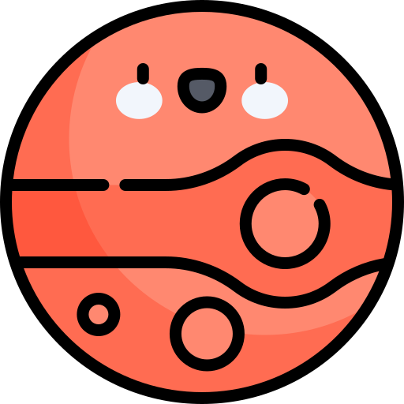
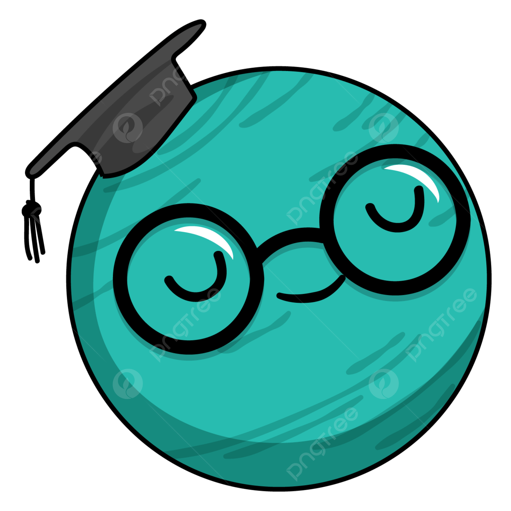

Es hora de viajar a diferentes mundos... pero ojo también puedes llegar a destruirlos.

Desértico
Pompenas es un mundo en donde la arena es todo lo que puedes ver. Los vientos de la superficie generan tormentas espeluznantes, es por eso que siempre debes proteger tus ojos.
Este planeta está a la espera de un nuevo guerrero que tenga el valor de superar los desafios impuestos por nuestra diosa "Pompen" y restaurar su viejo esplendor.

Helado
Hace 600 millones de años, una fuerza esterna ataco el planeta y congelo por completo su superficie. Las especies que vivían allí quedaron suspendidas en el tiempo, pero las que vivian debajo de estas comenzaron a desarrollarse y a evolucionar. Descubre un mundo tecnológico subterraneo, en donde encontras tareas que te levaran a rescatar e investigar la superficie. Pero ten cuidado, puedes convertirte en una rata de lavoratorio si no tienes cuidado.
Mágico
Si crees en la magia, debes elegir este mund. Esta desición te llevara a un planeta lejano en donde todos tus conocimientos serán puestos a prueba, donde tendrás que superar las diferencias entre tus creencias y valores y las del mundo para poder superar las pruebas impuestas por su diosa y salvar al planeta de su destrucción.